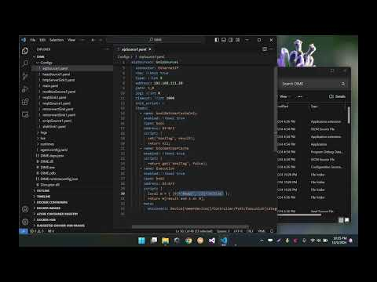
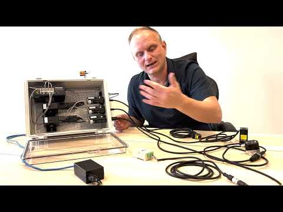
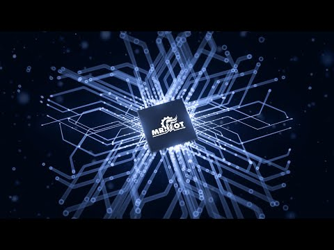
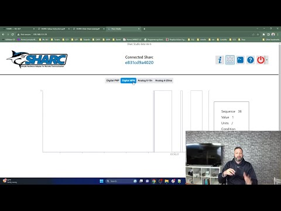
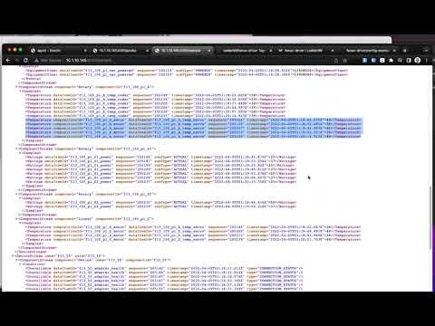
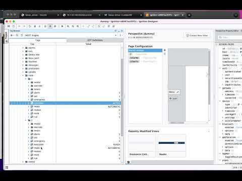
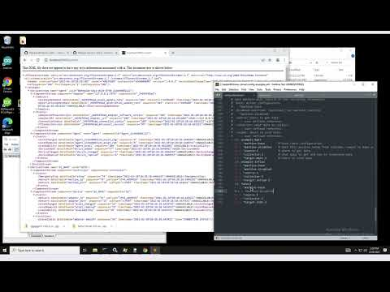
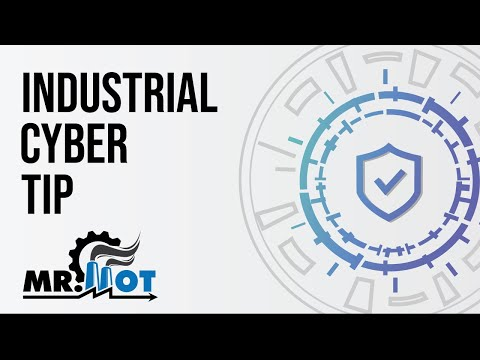

Media
See it in action.
Demos, setups, and integrations — SHARC, DIME, and the Fanuc-Driver, straight from the bench. Subscribe on YouTube →

DIME Introduction
Why IIoT? What is the value?
Live Demo of the SHARC Adapter

SHARC & Frenzy: Data Collection Kitting

SHARC Introduction

SHARC Setup
SHARC Local Node-RED Setup
SHARC via UMH

Fanuc-Driver + MTConnect

Fanuc-Driver + SparkplugB
Fanuc-Driver + InfluxDB

Fanuc-Driver — Version 0.2 Changes
Fanuc-Driver Windows Setup
CNC Protocol Converter — Hardware Overview
Machine Counting with Banner Wireless
